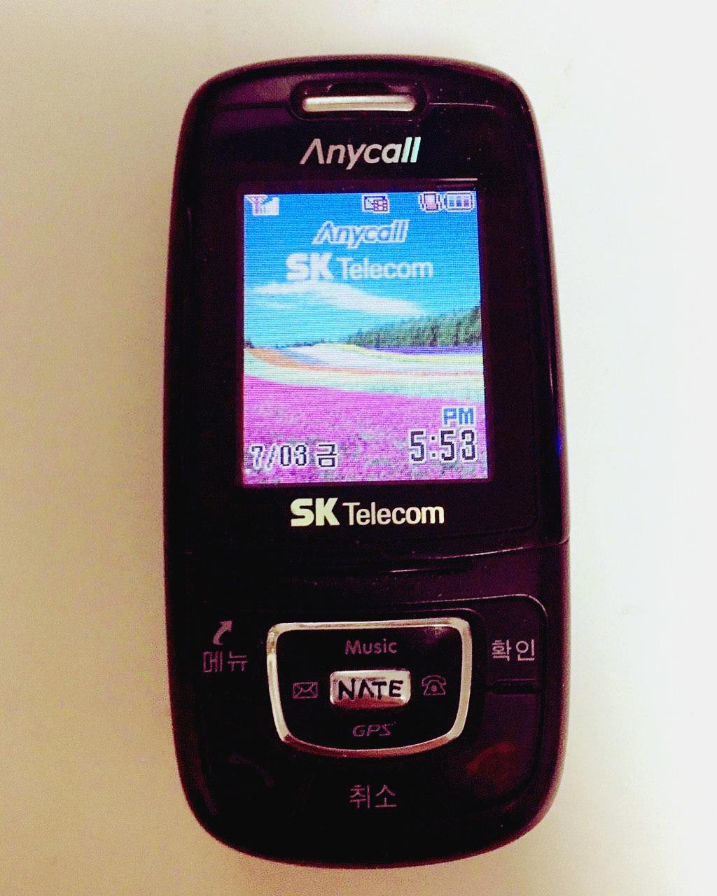

T9 숫자 변환N기


변환 결과:
CODE
8 44 33 0 33 7777 7777 33 66 222 33 0 666 333 0 6 2 8 44 33 6 2 8 444 222 7777 0 444 7777 0 333 777 33 33 3 666 6

8 44 33 0 33 7777 7777 33 66 222 33 0 666 333 0 6 2 8 44 33 6 2 8 444 222 7777 0 444 7777 0 333 777 33 33 3 666 6